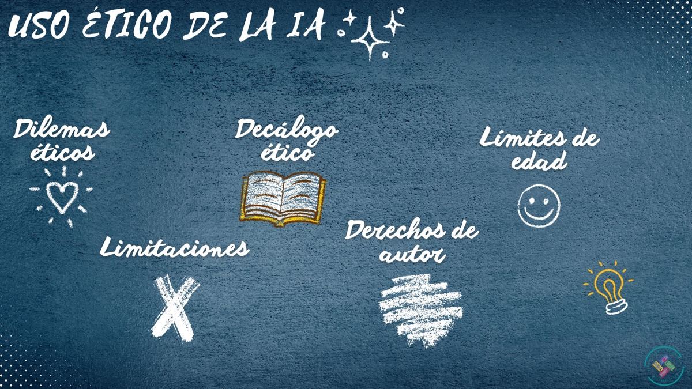

0.1. ¿Y esto de qué va?
Lo que tienes en pantalla es un recurso educativo abierto sobre uso educativo y ético de inteligencia artificial. Se trata de un sencillo proyecto que pretende guiar al profesorado en su iniciación al uso de la IA, mostrándole algunas de sus posibilidades y animando a su introducción en su día a día.
Este REA es fruto del trabajo de El loco de la mochila, quien está encantado de compartir contigo su experiencia y sus ideas. Si te interesa, no dudes en visitar su blog.
¡Mucho ánimo y adelante!
0.2. Nuestras compañeras de viaje.
Cualquier viaje siempre es mejor hacerlo en buena compañía... Así que en este REA nos van a acompañar EmilIA y ConecTOR, quienes nos guiarán a lo largo del desarrollo, asegurándose siempre de nuestro aprendizaje. ¡Vamos primero a conocerlos un poco!
| EmilIA es una experta en el funcionamiento técnico de cualquier inteligencia artificial. Nació, creció y estudió entre cables. Comprende a la perfección la mente de una IA. De hecho, sus mejores amigas son inteligencias artificiales. EmilIA nos guiará en el conocimiento del funcionamiento de la inteligencia artificial y en su uso educativo. | |
 |
ConecTOR es un listillo. Conoce todos los rincones de Internet. Es experto en webgrafías e hiperenlaces. Su cerebro tiene una conexión directa con ChatGPT. ConecTOR nos ofrecerá recursos en la red para ampliar nuestros conocimientos o para resolver dudas. |
0.3. Ruta de trabajo.
